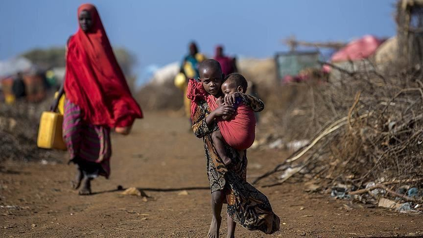
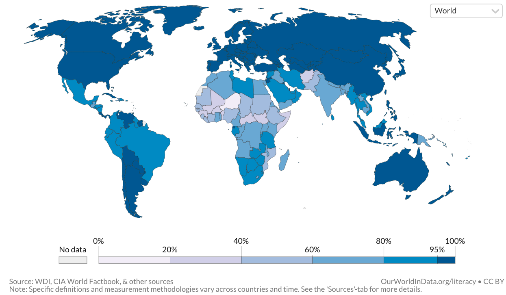

Education is very closely linked to poverty. Most countries currently in poverty do not provide sufficient education for its citizens. With education, people would be able to read and write, and they are basic qualities for employment. According to a study by UNESCO, "Better educated people have a greater
probability of being employed, are
economically more productive, and
therefore earn higher incomes." "The impact of education on earnings and thus on poverty
works largely through the labour market, though education
can also contribute to productivity in other areas, such as
peasant farming (Orazem, Glewwe & Patrinos, 2007: 5). In
the labour market, higher wages for more educated people
may result from higher productivity, but also perhaps
from the fact that education may act as a signal of ability
to employers, enabling the better educated to obtain more
lucrative jobs. Middle-income countries – which frequently
have well developed markets for more educated labour – are
particularly likely to see the benefits of education translated
into better jobs and higher wages. In Chile, for instance,
between one quarter and one third of household income
differences can be explained by the level of education of
household heads (Ferreira & Litchfield, 1998, p. 32). "
“Education improves health because it increases effective agency, enhancing a sense of personal control that encourages and enables a healthy lifestyle. Education’s beneficial effects are pervasive, cumulative, and self-amplifying, growing across the life course.”12
In 1983, the National Commission on Excellence in Education’s report, A Nation at Risk, launched a national conversation about the need for educational reform.13 In 1990, the US Department of Labor initiated a program – the Secretary’s Commission on Achieving Necessary Skills – to determine critical capacities for a US workforce to be provided by the educational system.14 The capacities proposed were based on “a three-part foundation” reflecting the broad notion of education that we propose: Basic Skills (reading, writing, arithmetic, mathematics, listening, speaking), Thinking Skills (creative thinking, decision making, problem solving, seeing things in the mind’s eye, knowing how to learn, reasoning), and Personal Qualities (responsibility, self-esteem, sociability, self-management, integrity/honesty). The project recommends as a central educational goal: “All American high school students must develop a new set of competencies and foundation skills if they are to enjoy a productive, full, and satisfying life.”14(p1) We would expand this list of outcomes to include a healthy life.
source: https://www.ncbi.nlm.nih.gov/pmc/articles/PMC4691207/